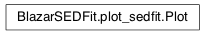

Moudule: plot_sedfit¶
This module contains all the classes necessary to build
Classes and Inheritance Structure¶
Module API¶
-
class
BlazarSEDFit.plot_sedfit.Plot(SEDdata=None, x_min=None, x_max=None, y_min=None, y_max=None, interactive=True, plot_workplace=None, title='Plot')[source]¶ Bases:
object-
add_model_plot(model, label=None, color=None, line_style=None, autoscale=False, update=True)[source]¶
-
rescale(**kw)[source]¶ Rescales the data plot acording to x_min/max, y_min/max values if no argument are passed, the plot is rescaled according to current x_min/max, y_min/max values if a value is passed as argument, the corresponding axis min/max is updated, and the plot is rescaled accordingly
Args: x_min,x_max,y_min,y_max
-
rescale_res(**kw)[source]¶ Rescales the data plot acording to x_min/max, y_min/max values if no argument are passed, the plot is rescaled according to current x_min/max, y_min/max values if a value is passed as argument, the corresponding axis min/max is updated, and the plot is rescaled accordingly
Args: x_min,x_max,y_min,y_max
-